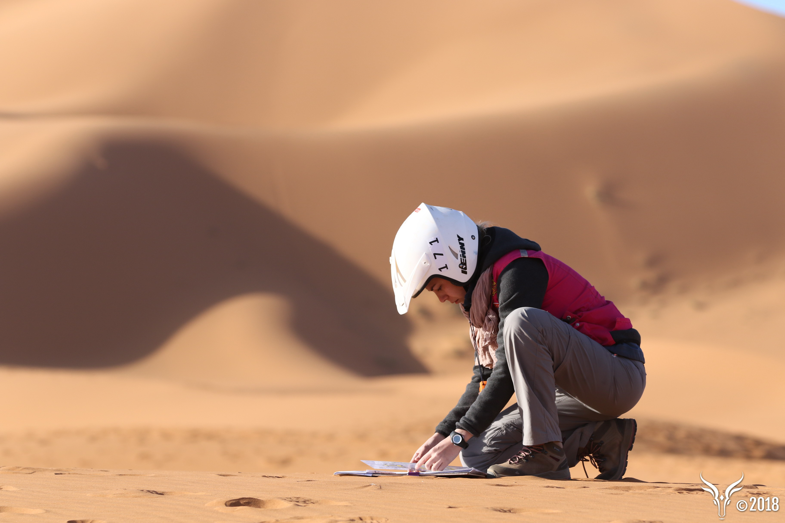
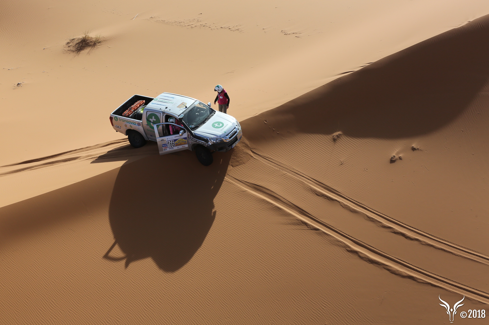
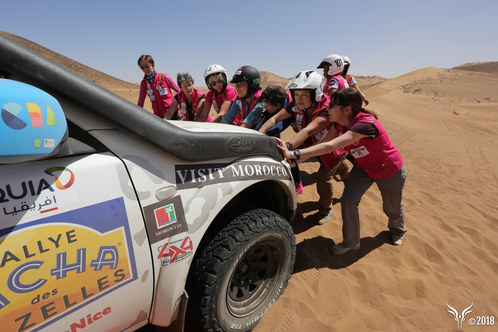

Le Rallye Aïcha des Gazelles
Le seul rallye-raid hors-piste certifié ISO 14001 au monde, 100 % féminin, au cœur du Sahara marocain.
Ici, la stratégie prime sur la rapidité
Le principe est rare, presque anachronique : naviguer à l'ancienne. Munies d'une carte des années 1950, d'une boussole et d'une règle de navigation, les équipages traversent les regs, les oueds, les dunes et les montagnes du sud marocain. Chaque itinéraire est un choix, chaque décision est assumée.
Le classement récompense la sobriété kilométrique : celle qui rallie le plus de balises en parcourant le moins de kilomètres l'emporte. Un principe qui aligne performance sportive et respect de l'environnement — et qui n'a pas d'équivalent dans le sport automobile.

Navigation à l'ancienne
Carte, boussole, règle. Aucun GPS, aucune assistance électronique. Un week-end de formation permet d'acquérir les bases avant le départ.

Terrain imprévisible
Regs, oueds, dunes, montagnes. Chaque jour est une immersion dans l'inconnu, où l'orientation reste la clé.

Accessible à toutes
Débutantes comme expérimentées. Il ne s'agit pas d'être sportive de haut niveau, mais d'avoir l'envie, l'audace et l'esprit d'équipe.
Nous concourons en 4x4, la catégorie historique du rallye — franchissements techniques et terrain mixte.
Quinze jours d'aventure, du sud de la France à Essaouira
Une aventure qui se joue en 3 actes
Acte I — Le départ Du sud de la France au Maroc
- Samedi 20 mars Accueil des équipages, briefing dans le sud de la France, remise des gilets Gazelles.
- Dimanche 21 mars Vérifications techniques et administratives, départ officiel, embarquement pour le Maroc.
- Lundi 22 mars Arrivée au Maroc, rencontre des équipages internationaux.
Acte II — La course Sept jours dans le désert
- Jeudi 25 mars Accompagnement de la caravane Cœur de Gazelles et remise des dons. En savoir plus sur Coeur de gazelles
- Du 26 mars au 1er avril Un prologue puis cinq étapes sans GPS, avec cinq à huit balises à retrouver chaque jour, dont deux étapes marathon : deux nuits en autonomie complète, à la belle étoile, sans retour au bivouac.
- Jeudi 1er avril Fête de fin au bivouac.
Acte III — L'arrivée Essaouira
- Vendredi 2 avril Direction Essaouira, traversée des villages.
- Samedi 3 avril Arrivée officielle sur la plage, accueil des familles, rencontres presse, remise des prix et soirée de gala.
La soirée de gala
Les partenaires de la formule La Totale sont conviés à la soirée de gala.
Un pari audacieux devenu une référence
En 1990, Dominique Serra imagine un rallye à contre-courant : le premier rallye inter-entreprises sans critère de vitesse, où il faut parcourir le moins de kilomètres possible pour gagner. Le 11 octobre 1990, vingt-sept pionnières démarrent les moteurs de leurs Lada Niva pour huit cents kilomètres.
2027, notre édition
Trente-sept ans après la première édition, Smile de Gazelles prend le départ sous le numéro 134. Sandra et Stéphanie rejoignent les douze mille femmes qui ont fait cette route avant elles.
La plus belle trace est celle que l'on ne laisse pas
Maïenga est la première agence au monde, et la seule à ce jour, à proposer des événements dont le système de management environnemental est certifié conforme à la norme ISO 14001 — une démarche engagée en 2007, obtenue en 2010, maintenue sans interruption depuis.
Le principe même du classement — rallier un maximum de balises en parcourant le moins de kilomètres — aligne performance sportive et sobriété : ce n'est pas un engagement ajouté après coup, c'est le cœur de la compétition.
« Être responsable, ce n'est pas viser la perfection, mais agir, évoluer et montrer l'exemple. »
Trente-cinq ans de crédibilité
Soutiens institutionnels
Le rallye est placé sous le Haut Patronage de Sa Majesté le Roi Mohammed VI et bénéficie du soutien de S.A.S. le Prince Albert II de Monaco.
Une aventure ouverte à tous les profils
Des équipages en situation de handicap participent depuis 2002 : championne paralympique, participante hémiplégique, roadbooks retranscrits en version audio pour un participant malvoyant, médaillés porteurs de trisomie 21.
Un engagement d'entreprise qui se reconduit
La Poste a engagé six équipages par an pendant seize ans. Total, quinze équipages par an pendant quinze ans. Renault, cinq équipages par an pendant dix ans. Soutenir un équipage n'est pas une démarche exotique : c'est une pratique établie que des milliers d'entreprises reconduisent.